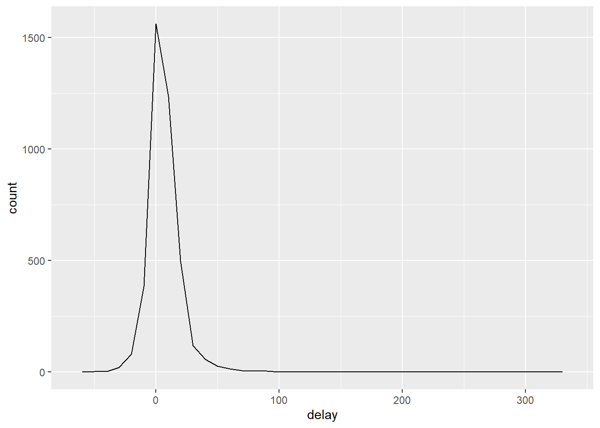

Chapter 5 Data transformations
5.1 Introduction
5.1.1 Prerequisites
We’ll be using the nycflights13 package.
5.1.2 nycflights13
We’ll be using the flights dataframe from the nycflights13 package. This dataframe contains all 336,776 flights that departed from New York City in 2013. This data frame comes from the Bureau of Transportation Statistics.
## # A tibble: 6 x 19
## year month day dep_time sched_dep_time dep_delay arr_time sched_arr_time
## <int> <int> <int> <int> <int> <dbl> <int> <int>
## 1 2013 1 1 517 515 2 830 819
## 2 2013 1 1 533 529 4 850 830
## 3 2013 1 1 542 540 2 923 850
## 4 2013 1 1 544 545 -1 1004 1022
## 5 2013 1 1 554 600 -6 812 837
## 6 2013 1 1 554 558 -4 740 728
## # ... with 11 more variables: arr_delay <dbl>, carrier <chr>, flight <int>,
## # tailnum <chr>, origin <chr>, dest <chr>, air_time <dbl>, distance <dbl>,
## # hour <dbl>, minute <dbl>, time_hour <dttm>The data is actualy in tibble form. A tibble is a dataframe that is slightly tweaked to work better in the tidyverse. More details on tibbles will be in the wrangle section.
5.1.3 dplyr basics
This chapter will introduce the five key dplyr functions that will allow us to solve the vast majority of data manipulation challenges.
- Pick observations by their values:
filter() - Reorder the rows:
arrange() - Pick variables by their names:
select() - Create new variables with functions of existing variables:
mutate() - Collapse many values down to a single summary: `summarise()
These can all be used with group_by() which changes the scope of each function from operating on the entire dataset to operating on it group-by-group. These six functions provide the verbs for a language of data manipulation.
All verbs work similary:
- The first argument is a data frame.
- The subsequent arguments describe what to do with the data frame, using the variable names (without quotes).
- The result is a new data frame.
5.2 Filter rows with filter()
filter() allows you to subset observations based on their values. The first argument is the dataframe. The second and subsequent arguments are the expressions that filter the dataframe.
For example, we can select all the flights on January 1st with:
## # A tibble: 842 x 19
## year month day dep_time sched_dep_time dep_delay arr_time sched_arr_time
## <int> <int> <int> <int> <int> <dbl> <int> <int>
## 1 2013 1 1 517 515 2 830 819
## 2 2013 1 1 533 529 4 850 830
## 3 2013 1 1 542 540 2 923 850
## 4 2013 1 1 544 545 -1 1004 1022
## 5 2013 1 1 554 600 -6 812 837
## 6 2013 1 1 554 558 -4 740 728
## 7 2013 1 1 555 600 -5 913 854
## 8 2013 1 1 557 600 -3 709 723
## 9 2013 1 1 557 600 -3 838 846
## 10 2013 1 1 558 600 -2 753 745
## # ... with 832 more rows, and 11 more variables: arr_delay <dbl>,
## # carrier <chr>, flight <int>, tailnum <chr>, origin <chr>, dest <chr>,
## # air_time <dbl>, distance <dbl>, hour <dbl>, minute <dbl>, time_hour <dttm>We can store the filtered dataframe in a variable.
5.2.1 Skip section
5.2.2 Logical operators
We can use logical operators with filter to do more complex commands. Say we wanted to get all flights in November or December. We could do
## # A tibble: 55,139 x 19
## year month day dep_time sched_dep_time dep_delay arr_time sched_arr_time
## <int> <int> <int> <int> <int> <dbl> <int> <int>
## 1 2013 1 1 517 515 2 830 819
## 2 2013 1 1 533 529 4 850 830
## 3 2013 1 1 542 540 2 923 850
## 4 2013 1 1 544 545 -1 1004 1022
## 5 2013 1 1 554 600 -6 812 837
## 6 2013 1 1 554 558 -4 740 728
## 7 2013 1 1 555 600 -5 913 854
## 8 2013 1 1 557 600 -3 709 723
## 9 2013 1 1 557 600 -3 838 846
## 10 2013 1 1 558 600 -2 753 745
## # ... with 55,129 more rows, and 11 more variables: arr_delay <dbl>,
## # carrier <chr>, flight <int>, tailnum <chr>, origin <chr>, dest <chr>,
## # air_time <dbl>, distance <dbl>, hour <dbl>, minute <dbl>, time_hour <dttm>A useful short-hand for this is x %in% y. This allows us select every row where \(x\) is one of the values in \(y\). We can rewrite the code above as
5.2.3 Missing Values
filter() only includes rows where the condition is true. If you want to keep NA values then ask for them explicitly.
## # A tibble: 1 x 1
## x
## <dbl>
## 1 3## # A tibble: 2 x 1
## x
## <dbl>
## 1 NA
## 2 35.2.4 Exercises
- Final all flights that
- Had an arrival delay of two or more hours
## # A tibble: 127,929 x 19
## year month day dep_time sched_dep_time dep_delay arr_time sched_arr_time
## <int> <int> <int> <int> <int> <dbl> <int> <int>
## 1 2013 1 1 517 515 2 830 819
## 2 2013 1 1 533 529 4 850 830
## 3 2013 1 1 542 540 2 923 850
## 4 2013 1 1 554 558 -4 740 728
## 5 2013 1 1 555 600 -5 913 854
## 6 2013 1 1 558 600 -2 753 745
## 7 2013 1 1 558 600 -2 924 917
## 8 2013 1 1 559 600 -1 941 910
## 9 2013 1 1 600 600 0 837 825
## 10 2013 1 1 602 605 -3 821 805
## # ... with 127,919 more rows, and 11 more variables: arr_delay <dbl>,
## # carrier <chr>, flight <int>, tailnum <chr>, origin <chr>, dest <chr>,
## # air_time <dbl>, distance <dbl>, hour <dbl>, minute <dbl>, time_hour <dttm>- Flew to Houston (IAH or HOU)
## # A tibble: 9,313 x 19
## year month day dep_time sched_dep_time dep_delay arr_time sched_arr_time
## <int> <int> <int> <int> <int> <dbl> <int> <int>
## 1 2013 1 1 517 515 2 830 819
## 2 2013 1 1 533 529 4 850 830
## 3 2013 1 1 623 627 -4 933 932
## 4 2013 1 1 728 732 -4 1041 1038
## 5 2013 1 1 739 739 0 1104 1038
## 6 2013 1 1 908 908 0 1228 1219
## 7 2013 1 1 1028 1026 2 1350 1339
## 8 2013 1 1 1044 1045 -1 1352 1351
## 9 2013 1 1 1114 900 134 1447 1222
## 10 2013 1 1 1205 1200 5 1503 1505
## # ... with 9,303 more rows, and 11 more variables: arr_delay <dbl>,
## # carrier <chr>, flight <int>, tailnum <chr>, origin <chr>, dest <chr>,
## # air_time <dbl>, distance <dbl>, hour <dbl>, minute <dbl>, time_hour <dttm>- Were operated by United, American, or Delta
# find out abbreviations for airlines
# ?flights
# airlines are stored in the airlines tibble
airlines## # A tibble: 16 x 2
## carrier name
## <chr> <chr>
## 1 9E Endeavor Air Inc.
## 2 AA American Airlines Inc.
## 3 AS Alaska Airlines Inc.
## 4 B6 JetBlue Airways
## 5 DL Delta Air Lines Inc.
## 6 EV ExpressJet Airlines Inc.
## 7 F9 Frontier Airlines Inc.
## 8 FL AirTran Airways Corporation
## 9 HA Hawaiian Airlines Inc.
## 10 MQ Envoy Air
## 11 OO SkyWest Airlines Inc.
## 12 UA United Air Lines Inc.
## 13 US US Airways Inc.
## 14 VX Virgin America
## 15 WN Southwest Airlines Co.
## 16 YV Mesa Airlines Inc.## # A tibble: 139,504 x 19
## year month day dep_time sched_dep_time dep_delay arr_time sched_arr_time
## <int> <int> <int> <int> <int> <dbl> <int> <int>
## 1 2013 1 1 517 515 2 830 819
## 2 2013 1 1 533 529 4 850 830
## 3 2013 1 1 542 540 2 923 850
## 4 2013 1 1 554 600 -6 812 837
## 5 2013 1 1 554 558 -4 740 728
## 6 2013 1 1 558 600 -2 753 745
## 7 2013 1 1 558 600 -2 924 917
## 8 2013 1 1 558 600 -2 923 937
## 9 2013 1 1 559 600 -1 941 910
## 10 2013 1 1 559 600 -1 854 902
## # ... with 139,494 more rows, and 11 more variables: arr_delay <dbl>,
## # carrier <chr>, flight <int>, tailnum <chr>, origin <chr>, dest <chr>,
## # air_time <dbl>, distance <dbl>, hour <dbl>, minute <dbl>, time_hour <dttm>- Departed in summer (July, August, and September)
## # A tibble: 86,326 x 19
## year month day dep_time sched_dep_time dep_delay arr_time sched_arr_time
## <int> <int> <int> <int> <int> <dbl> <int> <int>
## 1 2013 7 1 1 2029 212 236 2359
## 2 2013 7 1 2 2359 3 344 344
## 3 2013 7 1 29 2245 104 151 1
## 4 2013 7 1 43 2130 193 322 14
## 5 2013 7 1 44 2150 174 300 100
## 6 2013 7 1 46 2051 235 304 2358
## 7 2013 7 1 48 2001 287 308 2305
## 8 2013 7 1 58 2155 183 335 43
## 9 2013 7 1 100 2146 194 327 30
## 10 2013 7 1 100 2245 135 337 135
## # ... with 86,316 more rows, and 11 more variables: arr_delay <dbl>,
## # carrier <chr>, flight <int>, tailnum <chr>, origin <chr>, dest <chr>,
## # air_time <dbl>, distance <dbl>, hour <dbl>, minute <dbl>, time_hour <dttm>- Arrived more than two hours late, but didn’t leave late
## # A tibble: 34,583 x 19
## year month day dep_time sched_dep_time dep_delay arr_time sched_arr_time
## <int> <int> <int> <int> <int> <dbl> <int> <int>
## 1 2013 1 1 554 558 -4 740 728
## 2 2013 1 1 555 600 -5 913 854
## 3 2013 1 1 558 600 -2 753 745
## 4 2013 1 1 558 600 -2 924 917
## 5 2013 1 1 559 600 -1 941 910
## 6 2013 1 1 600 600 0 837 825
## 7 2013 1 1 602 605 -3 821 805
## 8 2013 1 1 622 630 -8 1017 1014
## 9 2013 1 1 624 630 -6 909 840
## 10 2013 1 1 624 630 -6 840 830
## # ... with 34,573 more rows, and 11 more variables: arr_delay <dbl>,
## # carrier <chr>, flight <int>, tailnum <chr>, origin <chr>, dest <chr>,
## # air_time <dbl>, distance <dbl>, hour <dbl>, minute <dbl>, time_hour <dttm>- Were delayed by at least an hour, but made up over 30 minutes in flight.
## # A tibble: 8,974 x 19
## year month day dep_time sched_dep_time dep_delay arr_time sched_arr_time
## <int> <int> <int> <int> <int> <dbl> <int> <int>
## 1 2013 1 1 701 700 1 1123 1154
## 2 2013 1 1 857 851 6 1157 1222
## 3 2013 1 1 909 810 59 1331 1315
## 4 2013 1 1 1025 951 34 1258 1302
## 5 2013 1 1 1625 1550 35 2054 2050
## 6 2013 1 1 1716 1545 91 2140 2039
## 7 2013 1 1 1900 1845 15 2212 2227
## 8 2013 1 1 1957 1945 12 2307 2329
## 9 2013 1 1 2035 2030 5 2337 5
## 10 2013 1 1 2046 2035 11 2144 2213
## # ... with 8,964 more rows, and 11 more variables: arr_delay <dbl>,
## # carrier <chr>, flight <int>, tailnum <chr>, origin <chr>, dest <chr>,
## # air_time <dbl>, distance <dbl>, hour <dbl>, minute <dbl>, time_hour <dttm>- Departed between midnight and 6am (inclusive)
## # A tibble: 9,344 x 19
## year month day dep_time sched_dep_time dep_delay arr_time sched_arr_time
## <int> <int> <int> <int> <int> <dbl> <int> <int>
## 1 2013 1 1 517 515 2 830 819
## 2 2013 1 1 533 529 4 850 830
## 3 2013 1 1 542 540 2 923 850
## 4 2013 1 1 544 545 -1 1004 1022
## 5 2013 1 1 554 600 -6 812 837
## 6 2013 1 1 554 558 -4 740 728
## 7 2013 1 1 555 600 -5 913 854
## 8 2013 1 1 557 600 -3 709 723
## 9 2013 1 1 557 600 -3 838 846
## 10 2013 1 1 558 600 -2 753 745
## # ... with 9,334 more rows, and 11 more variables: arr_delay <dbl>,
## # carrier <chr>, flight <int>, tailnum <chr>, origin <chr>, dest <chr>,
## # air_time <dbl>, distance <dbl>, hour <dbl>, minute <dbl>, time_hour <dttm>- Another useful
dplyrfiltering helper isbetween(). What does it do? Can you use it to simplify the code needed to answer the previous challenges?
between(x, left, right) is a shortcut for x >= left and x <= right. We can definitely shorten part 4: departed in summer (between july and september)
## # A tibble: 86,326 x 19
## year month day dep_time sched_dep_time dep_delay arr_time sched_arr_time
## <int> <int> <int> <int> <int> <dbl> <int> <int>
## 1 2013 7 1 1 2029 212 236 2359
## 2 2013 7 1 2 2359 3 344 344
## 3 2013 7 1 29 2245 104 151 1
## 4 2013 7 1 43 2130 193 322 14
## 5 2013 7 1 44 2150 174 300 100
## 6 2013 7 1 46 2051 235 304 2358
## 7 2013 7 1 48 2001 287 308 2305
## 8 2013 7 1 58 2155 183 335 43
## 9 2013 7 1 100 2146 194 327 30
## 10 2013 7 1 100 2245 135 337 135
## # ... with 86,316 more rows, and 11 more variables: arr_delay <dbl>,
## # carrier <chr>, flight <int>, tailnum <chr>, origin <chr>, dest <chr>,
## # air_time <dbl>, distance <dbl>, hour <dbl>, minute <dbl>, time_hour <dttm>The rest are already simpler.
- How many flights have a missing
dep_time? What other variables are missing? What might these rows represent?
## # A tibble: 8,255 x 19
## year month day dep_time sched_dep_time dep_delay arr_time sched_arr_time
## <int> <int> <int> <int> <int> <dbl> <int> <int>
## 1 2013 1 1 NA 1630 NA NA 1815
## 2 2013 1 1 NA 1935 NA NA 2240
## 3 2013 1 1 NA 1500 NA NA 1825
## 4 2013 1 1 NA 600 NA NA 901
## 5 2013 1 2 NA 1540 NA NA 1747
## 6 2013 1 2 NA 1620 NA NA 1746
## 7 2013 1 2 NA 1355 NA NA 1459
## 8 2013 1 2 NA 1420 NA NA 1644
## 9 2013 1 2 NA 1321 NA NA 1536
## 10 2013 1 2 NA 1545 NA NA 1910
## # ... with 8,245 more rows, and 11 more variables: arr_delay <dbl>,
## # carrier <chr>, flight <int>, tailnum <chr>, origin <chr>, dest <chr>,
## # air_time <dbl>, distance <dbl>, hour <dbl>, minute <dbl>, time_hour <dttm>There are 8,255 flights missing dep_time. These are missing arr_time and air_time. These may be flights that were canceled and never took off.
- Why is
NA ^ 0not missing? Why isNA | TRUEnot missing? Why isFALSE & NAnot missing? Can you figure out the general rule? (NA * 0is a tricky counterexample!)
## [1] 1## [1] TRUE## [1] FALSE## [1] NAWe get a solution for the first three because no matter what value of the NA is, the solution will be the same. Imagine the NA was infinity in the first statement, then the answer is still 1. For the second statment NA | TRUE, we only need one side to be true and the entire is statement is true. Thus, it doesn’t matter what the NA value is. Then in the third statement FALSE & NA, we need both sides to be true and since one is already FALSE, then the entire statement is false regardless of what the NA value is. Finally, the NA * 0 statement doesn’t work because most of the time 0 times a number is 0, however if the NA were infinity, the answer is not zero.
## [1] NaNThis mean that we cannot get an answer for this statement.
5.3 Arrange rows with arrange()
arrange() works similarly to filter() except it changes the order of the rows. It takes a data frame and a set of column names to order by. If you provide more than one column name, each additional column will be used to break ties in the values of the preceding column.
## # A tibble: 336,776 x 19
## year month day dep_time sched_dep_time dep_delay arr_time sched_arr_time
## <int> <int> <int> <int> <int> <dbl> <int> <int>
## 1 2013 1 1 517 515 2 830 819
## 2 2013 1 1 533 529 4 850 830
## 3 2013 1 1 542 540 2 923 850
## 4 2013 1 1 544 545 -1 1004 1022
## 5 2013 1 1 554 600 -6 812 837
## 6 2013 1 1 554 558 -4 740 728
## 7 2013 1 1 555 600 -5 913 854
## 8 2013 1 1 557 600 -3 709 723
## 9 2013 1 1 557 600 -3 838 846
## 10 2013 1 1 558 600 -2 753 745
## # ... with 336,766 more rows, and 11 more variables: arr_delay <dbl>,
## # carrier <chr>, flight <int>, tailnum <chr>, origin <chr>, dest <chr>,
## # air_time <dbl>, distance <dbl>, hour <dbl>, minute <dbl>, time_hour <dttm>Use desc() to re-order a column in descending order.
## # A tibble: 336,776 x 19
## year month day dep_time sched_dep_time dep_delay arr_time sched_arr_time
## <int> <int> <int> <int> <int> <dbl> <int> <int>
## 1 2013 1 9 641 900 1301 1242 1530
## 2 2013 6 15 1432 1935 1137 1607 2120
## 3 2013 1 10 1121 1635 1126 1239 1810
## 4 2013 9 20 1139 1845 1014 1457 2210
## 5 2013 7 22 845 1600 1005 1044 1815
## 6 2013 4 10 1100 1900 960 1342 2211
## 7 2013 3 17 2321 810 911 135 1020
## 8 2013 6 27 959 1900 899 1236 2226
## 9 2013 7 22 2257 759 898 121 1026
## 10 2013 12 5 756 1700 896 1058 2020
## # ... with 336,766 more rows, and 11 more variables: arr_delay <dbl>,
## # carrier <chr>, flight <int>, tailnum <chr>, origin <chr>, dest <chr>,
## # air_time <dbl>, distance <dbl>, hour <dbl>, minute <dbl>, time_hour <dttm>Missing values are always sorted at the end.
## # A tibble: 3 x 1
## x
## <dbl>
## 1 2
## 2 5
## 3 NA## # A tibble: 3 x 1
## x
## <dbl>
## 1 5
## 2 2
## 3 NA5.3.1 5.3.1 Exercises
- How could you use
arrange()to sort all missing values to the start? (Hint: useis.na())
df <- tibble(x = c(1,NA,2,3,NA,4,5,NA))
# sort in descending order, with is.na()
arrange(df, desc(is.na(x)))## # A tibble: 8 x 1
## x
## <dbl>
## 1 NA
## 2 NA
## 3 NA
## 4 1
## 5 2
## 6 3
## 7 4
## 8 5- Sort
flightsto find the most delayed flights. Find the flights that left earliest.
## # A tibble: 336,776 x 19
## year month day dep_time sched_dep_time dep_delay arr_time sched_arr_time
## <int> <int> <int> <int> <int> <dbl> <int> <int>
## 1 2013 1 9 641 900 1301 1242 1530
## 2 2013 6 15 1432 1935 1137 1607 2120
## 3 2013 1 10 1121 1635 1126 1239 1810
## 4 2013 9 20 1139 1845 1014 1457 2210
## 5 2013 7 22 845 1600 1005 1044 1815
## 6 2013 4 10 1100 1900 960 1342 2211
## 7 2013 3 17 2321 810 911 135 1020
## 8 2013 6 27 959 1900 899 1236 2226
## 9 2013 7 22 2257 759 898 121 1026
## 10 2013 12 5 756 1700 896 1058 2020
## # ... with 336,766 more rows, and 11 more variables: arr_delay <dbl>,
## # carrier <chr>, flight <int>, tailnum <chr>, origin <chr>, dest <chr>,
## # air_time <dbl>, distance <dbl>, hour <dbl>, minute <dbl>, time_hour <dttm>- Sort
flightsto find the fastest (highest speed) flights.
## # A tibble: 336,776 x 19
## year month day dep_time sched_dep_time dep_delay arr_time sched_arr_time
## <int> <int> <int> <int> <int> <dbl> <int> <int>
## 1 2013 1 28 1917 1825 52 2118 1935
## 2 2013 6 29 755 800 -5 1035 909
## 3 2013 8 28 932 940 -8 1116 1051
## 4 2013 1 30 1037 955 42 1221 1100
## 5 2013 11 27 556 600 -4 727 658
## 6 2013 5 21 558 600 -2 721 657
## 7 2013 12 9 1540 1535 5 1720 1656
## 8 2013 6 10 1356 1300 56 1646 1414
## 9 2013 7 28 1322 1325 -3 1612 1432
## 10 2013 4 11 1349 1345 4 1542 1453
## # ... with 336,766 more rows, and 11 more variables: arr_delay <dbl>,
## # carrier <chr>, flight <int>, tailnum <chr>, origin <chr>, dest <chr>,
## # air_time <dbl>, distance <dbl>, hour <dbl>, minute <dbl>, time_hour <dttm>- Which flights travelled the farthest? Which travelled the shortest?
## # A tibble: 336,776 x 19
## year month day dep_time sched_dep_time dep_delay arr_time sched_arr_time
## <int> <int> <int> <int> <int> <dbl> <int> <int>
## 1 2013 7 27 NA 106 NA NA 245
## 2 2013 1 3 2127 2129 -2 2222 2224
## 3 2013 1 4 1240 1200 40 1333 1306
## 4 2013 1 4 1829 1615 134 1937 1721
## 5 2013 1 4 2128 2129 -1 2218 2224
## 6 2013 1 5 1155 1200 -5 1241 1306
## 7 2013 1 6 2125 2129 -4 2224 2224
## 8 2013 1 7 2124 2129 -5 2212 2224
## 9 2013 1 8 2127 2130 -3 2304 2225
## 10 2013 1 9 2126 2129 -3 2217 2224
## # ... with 336,766 more rows, and 11 more variables: arr_delay <dbl>,
## # carrier <chr>, flight <int>, tailnum <chr>, origin <chr>, dest <chr>,
## # air_time <dbl>, distance <dbl>, hour <dbl>, minute <dbl>, time_hour <dttm>## # A tibble: 336,776 x 19
## year month day dep_time sched_dep_time dep_delay arr_time sched_arr_time
## <int> <int> <int> <int> <int> <dbl> <int> <int>
## 1 2013 1 1 857 900 -3 1516 1530
## 2 2013 1 2 909 900 9 1525 1530
## 3 2013 1 3 914 900 14 1504 1530
## 4 2013 1 4 900 900 0 1516 1530
## 5 2013 1 5 858 900 -2 1519 1530
## 6 2013 1 6 1019 900 79 1558 1530
## 7 2013 1 7 1042 900 102 1620 1530
## 8 2013 1 8 901 900 1 1504 1530
## 9 2013 1 9 641 900 1301 1242 1530
## 10 2013 1 10 859 900 -1 1449 1530
## # ... with 336,766 more rows, and 11 more variables: arr_delay <dbl>,
## # carrier <chr>, flight <int>, tailnum <chr>, origin <chr>, dest <chr>,
## # air_time <dbl>, distance <dbl>, hour <dbl>, minute <dbl>, time_hour <dttm>5.4 Selection columns with select()
select() allows you to zoom in on a useful subset of columns using operations baed on the names of the variables.
## # A tibble: 336,776 x 3
## year month day
## <int> <int> <int>
## 1 2013 1 1
## 2 2013 1 1
## 3 2013 1 1
## 4 2013 1 1
## 5 2013 1 1
## 6 2013 1 1
## 7 2013 1 1
## 8 2013 1 1
## 9 2013 1 1
## 10 2013 1 1
## # ... with 336,766 more rows## # A tibble: 336,776 x 3
## year month day
## <int> <int> <int>
## 1 2013 1 1
## 2 2013 1 1
## 3 2013 1 1
## 4 2013 1 1
## 5 2013 1 1
## 6 2013 1 1
## 7 2013 1 1
## 8 2013 1 1
## 9 2013 1 1
## 10 2013 1 1
## # ... with 336,766 more rows## # A tibble: 336,776 x 16
## dep_time sched_dep_time dep_delay arr_time sched_arr_time arr_delay carrier
## <int> <int> <dbl> <int> <int> <dbl> <chr>
## 1 517 515 2 830 819 11 UA
## 2 533 529 4 850 830 20 UA
## 3 542 540 2 923 850 33 AA
## 4 544 545 -1 1004 1022 -18 B6
## 5 554 600 -6 812 837 -25 DL
## 6 554 558 -4 740 728 12 UA
## 7 555 600 -5 913 854 19 B6
## 8 557 600 -3 709 723 -14 EV
## 9 557 600 -3 838 846 -8 B6
## 10 558 600 -2 753 745 8 AA
## # ... with 336,766 more rows, and 9 more variables: flight <int>,
## # tailnum <chr>, origin <chr>, dest <chr>, air_time <dbl>, distance <dbl>,
## # hour <dbl>, minute <dbl>, time_hour <dttm>There are some other useful helper functions that you can use with select():
starts_with(abc)matches names that begin with “abc”ends_with(xyz)matches names that end with “xyz”- `contains(“ijk”) matches names that contain “ijk”
- `matches(“(.)\1”) selects variables that match a regular expression. This one matches any variables that contain repeated characters.
num_range("x", 1:3)matchesx1,x2,x3
Se more in ?select
select() can also be used to rename variables, but is rarely useful because it drops all of the variables not explicitly mentioned. Instead, use rename(), a variant of select() that keeps all the variables that aren’t explicitly mentioned.
## # A tibble: 336,776 x 19
## year month date dep_time sched_dep_time dep_delay arr_time sched_arr_time
## <int> <int> <int> <int> <int> <dbl> <int> <int>
## 1 2013 1 1 517 515 2 830 819
## 2 2013 1 1 533 529 4 850 830
## 3 2013 1 1 542 540 2 923 850
## 4 2013 1 1 544 545 -1 1004 1022
## 5 2013 1 1 554 600 -6 812 837
## 6 2013 1 1 554 558 -4 740 728
## 7 2013 1 1 555 600 -5 913 854
## 8 2013 1 1 557 600 -3 709 723
## 9 2013 1 1 557 600 -3 838 846
## 10 2013 1 1 558 600 -2 753 745
## # ... with 336,766 more rows, and 11 more variables: arr_delay <dbl>,
## # carrier <chr>, flight <int>, tailnum <chr>, origin <chr>, dest <chr>,
## # air_time <dbl>, distance <dbl>, hour <dbl>, minute <dbl>, time_hour <dttm>Another option is to use select() with everything(). This is useful if you have a handful of variables that you’d like to move to the start of the data frame.
## # A tibble: 336,776 x 19
## time_hour air_time year month day dep_time sched_dep_time
## <dttm> <dbl> <int> <int> <int> <int> <int>
## 1 2013-01-01 05:00:00 227 2013 1 1 517 515
## 2 2013-01-01 05:00:00 227 2013 1 1 533 529
## 3 2013-01-01 05:00:00 160 2013 1 1 542 540
## 4 2013-01-01 05:00:00 183 2013 1 1 544 545
## 5 2013-01-01 06:00:00 116 2013 1 1 554 600
## 6 2013-01-01 05:00:00 150 2013 1 1 554 558
## 7 2013-01-01 06:00:00 158 2013 1 1 555 600
## 8 2013-01-01 06:00:00 53 2013 1 1 557 600
## 9 2013-01-01 06:00:00 140 2013 1 1 557 600
## 10 2013-01-01 06:00:00 138 2013 1 1 558 600
## # ... with 336,766 more rows, and 12 more variables: dep_delay <dbl>,
## # arr_time <int>, sched_arr_time <int>, arr_delay <dbl>, carrier <chr>,
## # flight <int>, tailnum <chr>, origin <chr>, dest <chr>, distance <dbl>,
## # hour <dbl>, minute <dbl>5.4.1 Exercises
- Brainstorm as many ways as possible to select
dep_time,dep_delay,air_time, andarr_delayfrom `flights.
## # A tibble: 336,776 x 4
## dep_time dep_delay arr_time arr_delay
## <int> <dbl> <int> <dbl>
## 1 517 2 830 11
## 2 533 4 850 20
## 3 542 2 923 33
## 4 544 -1 1004 -18
## 5 554 -6 812 -25
## 6 554 -4 740 12
## 7 555 -5 913 19
## 8 557 -3 709 -14
## 9 557 -3 838 -8
## 10 558 -2 753 8
## # ... with 336,766 more rows# using select() with helper function starts_with()
select(flights, starts_with("dep"), starts_with("arr"))## # A tibble: 336,776 x 4
## dep_time dep_delay arr_time arr_delay
## <int> <dbl> <int> <dbl>
## 1 517 2 830 11
## 2 533 4 850 20
## 3 542 2 923 33
## 4 544 -1 1004 -18
## 5 554 -6 812 -25
## 6 554 -4 740 12
## 7 555 -5 913 19
## 8 557 -3 709 -14
## 9 557 -3 838 -8
## 10 558 -2 753 8
## # ... with 336,766 more rows# use select() with ends_with() and starts_with()
select(flights, ends_with("delay"), ends_with("time"), -starts_with(c("sched", "air")))## # A tibble: 336,776 x 4
## dep_delay arr_delay dep_time arr_time
## <dbl> <dbl> <int> <int>
## 1 2 11 517 830
## 2 4 20 533 850
## 3 2 33 542 923
## 4 -1 -18 544 1004
## 5 -6 -25 554 812
## 6 -4 12 554 740
## 7 -5 19 555 913
## 8 -3 -14 557 709
## 9 -3 -8 557 838
## 10 -2 8 558 753
## # ... with 336,766 more rows- What happens if you include the name of a variable multiple times in a
select()call?
## # A tibble: 336,776 x 1
## year
## <int>
## 1 2013
## 2 2013
## 3 2013
## 4 2013
## 5 2013
## 6 2013
## 7 2013
## 8 2013
## 9 2013
## 10 2013
## # ... with 336,766 more rowsIf you include a variable multiple times in select, the variables will only be selected once.
- What does the
any_of()function do? Why might it be helpful in conjunction with this vector?
The any_of() function will select any of the columns using a vector. As opposed to the all_of() function, any_of() will not throw an error if the vector contains names that are not found as columns in the data frame.
## # A tibble: 336,776 x 5
## year month day dep_delay arr_delay
## <int> <int> <int> <dbl> <dbl>
## 1 2013 1 1 2 11
## 2 2013 1 1 4 20
## 3 2013 1 1 2 33
## 4 2013 1 1 -1 -18
## 5 2013 1 1 -6 -25
## 6 2013 1 1 -4 12
## 7 2013 1 1 -5 19
## 8 2013 1 1 -3 -14
## 9 2013 1 1 -3 -8
## 10 2013 1 1 -2 8
## # ... with 336,766 more rows- Does the result of running the following code suprise you? How do the select helpers deal with case by default? How can you change the default?
## # A tibble: 336,776 x 6
## dep_time sched_dep_time arr_time sched_arr_time air_time time_hour
## <int> <int> <int> <int> <dbl> <dttm>
## 1 517 515 830 819 227 2013-01-01 05:00:00
## 2 533 529 850 830 227 2013-01-01 05:00:00
## 3 542 540 923 850 160 2013-01-01 05:00:00
## 4 544 545 1004 1022 183 2013-01-01 05:00:00
## 5 554 600 812 837 116 2013-01-01 06:00:00
## 6 554 558 740 728 150 2013-01-01 05:00:00
## 7 555 600 913 854 158 2013-01-01 06:00:00
## 8 557 600 709 723 53 2013-01-01 06:00:00
## 9 557 600 838 846 140 2013-01-01 06:00:00
## 10 558 600 753 745 138 2013-01-01 06:00:00
## # ... with 336,766 more rowsThe helpers ignore case by default. To change this behaviour we can use the ignore.case argument.
## # A tibble: 336,776 x 05.5 Add new variables with mutate()
We can add new columns that are functions of existing columns using mutate(). This will add new columns at the end of the dataset.
# create a dataframe with less columns
flights_sml <- select(flights, year:day, ends_with('delay'), distance, air_time)
# add new columns with mutate()
mutate(flights_sml,
gain = dep_delay - arr_delay,
speed = distance / air_time * 60)## # A tibble: 336,776 x 9
## year month day dep_delay arr_delay distance air_time gain speed
## <int> <int> <int> <dbl> <dbl> <dbl> <dbl> <dbl> <dbl>
## 1 2013 1 1 2 11 1400 227 -9 370.
## 2 2013 1 1 4 20 1416 227 -16 374.
## 3 2013 1 1 2 33 1089 160 -31 408.
## 4 2013 1 1 -1 -18 1576 183 17 517.
## 5 2013 1 1 -6 -25 762 116 19 394.
## 6 2013 1 1 -4 12 719 150 -16 288.
## 7 2013 1 1 -5 19 1065 158 -24 404.
## 8 2013 1 1 -3 -14 229 53 11 259.
## 9 2013 1 1 -3 -8 944 140 5 405.
## 10 2013 1 1 -2 8 733 138 -10 319.
## # ... with 336,766 more rowsNote that you can refere to the columns that you just created.
mutate(flights_sml,
gain = dep_delay - arr_delay,
hours = air_time / 60,
gain_per_hour = gain / hours)## # A tibble: 336,776 x 10
## year month day dep_delay arr_delay distance air_time gain hours
## <int> <int> <int> <dbl> <dbl> <dbl> <dbl> <dbl> <dbl>
## 1 2013 1 1 2 11 1400 227 -9 3.78
## 2 2013 1 1 4 20 1416 227 -16 3.78
## 3 2013 1 1 2 33 1089 160 -31 2.67
## 4 2013 1 1 -1 -18 1576 183 17 3.05
## 5 2013 1 1 -6 -25 762 116 19 1.93
## 6 2013 1 1 -4 12 719 150 -16 2.5
## 7 2013 1 1 -5 19 1065 158 -24 2.63
## 8 2013 1 1 -3 -14 229 53 11 0.883
## 9 2013 1 1 -3 -8 944 140 5 2.33
## 10 2013 1 1 -2 8 733 138 -10 2.3
## # ... with 336,766 more rows, and 1 more variable: gain_per_hour <dbl>If you only want to keep the new variables, use transmute().
transmute(flights,
gain = dep_delay - arr_delay,
hours = air_time / 60,
gain_per_hour = gain / hours)## # A tibble: 336,776 x 3
## gain hours gain_per_hour
## <dbl> <dbl> <dbl>
## 1 -9 3.78 -2.38
## 2 -16 3.78 -4.23
## 3 -31 2.67 -11.6
## 4 17 3.05 5.57
## 5 19 1.93 9.83
## 6 -16 2.5 -6.4
## 7 -24 2.63 -9.11
## 8 11 0.883 12.5
## 9 5 2.33 2.14
## 10 -10 2.3 -4.35
## # ... with 336,766 more rows5.5.1 Useful creation functions
There are many functions you might use with the mutate() function. Here are some useful ones.
- arithmetic operators:
+,-,*,/,^ - modular arithmentic:
%/%(integer division) and%%(remainder) - logs:
log(),log2(),log10() - offsets:
lead()andlag()allow you to refer to the leading or lagging values.
## [1] 1 2 3 4 5 6 7 8 9 10## [1] NA 1 2 3 4 5 6 7 8 9## [1] 2 3 4 5 6 7 8 9 10 NA## [1] NA 1 1 1 1 1 1 1 1 1## [1] NA TRUE TRUE TRUE TRUE TRUE TRUE TRUE TRUE TRUE- cumulative and rolling aggregates:
cumsum()(cumulative sum),cumprod()(cumulative product),cummin()(cumulative min),cummax()(cumulative max),cummean()(cumulative mean).
## [1] 1 2 3 4 5 6 7 8 9 10## [1] 1 3 6 10 15 21 28 36 45 55## [1] 1 2 6 24 120 720 5040 40320 362880
## [10] 3628800## [1] 1 1 1 1 1 1 1 1 1 1## [1] 1 2 3 4 5 6 7 8 9 10## [1] 1.0 1.5 2.0 2.5 3.0 3.5 4.0 4.5 5.0 5.5- logical comparisons:
<,<=,>,>=,!=,== - ranking
## [1] 1 2 2 NA 4 5## [1] 5 3 3 NA 2 1Here are some variants of the standard ranks.
## [1] 1 2 3 NA 4 5## [1] 1 2 2 NA 3 4## [1] 0.00 0.25 0.25 NA 0.75 1.00## [1] 0.2 0.6 0.6 NA 0.8 1.05.5.2 Exercises
- Currently
dep_timeandsched_dep_timeare convenient to look at, but hard to compute with because they’re not really continuous numbers. Convert them to a more convenient representation of number of minutes since midnight.
# make a smaller data frame
flights_sml <- select(flights, dep_time, sched_dep_time)
# multiply hours by 60 and add to minutes
# time is formatted as HHMM or HMM
mutate(flights_sml,
new_dep_time = dep_time %/% 100 * 60 + dep_time %% 100,
new_sched_dep_time = sched_dep_time %/% 100 * 60 + sched_dep_time %% 100
)## # A tibble: 336,776 x 4
## dep_time sched_dep_time new_dep_time new_sched_dep_time
## <int> <int> <dbl> <dbl>
## 1 517 515 317 315
## 2 533 529 333 329
## 3 542 540 342 340
## 4 544 545 344 345
## 5 554 600 354 360
## 6 554 558 354 358
## 7 555 600 355 360
## 8 557 600 357 360
## 9 557 600 357 360
## 10 558 600 358 360
## # ... with 336,766 more rows- Compare
air_timewitharr_time - dep_time. What do you expect to see? What do you see? What do you need to do to fix it?
I would expect to see the duration of the flight.
flights_sml <- select(flights, arr_time, dep_time, air_time)
mutate(flights_sml,
duration = arr_time - dep_time)## # A tibble: 336,776 x 4
## arr_time dep_time air_time duration
## <int> <int> <dbl> <int>
## 1 830 517 227 313
## 2 850 533 227 317
## 3 923 542 160 381
## 4 1004 544 183 460
## 5 812 554 116 258
## 6 740 554 150 186
## 7 913 555 158 358
## 8 709 557 53 152
## 9 838 557 140 281
## 10 753 558 138 195
## # ... with 336,766 more rowsThe computed duration doesn’t match the air_time in the table. This format doesn’t allow us to do a subtraction because it’s written in HMM format. We can convert to minutes like we did previously. These times are also recorded in the local timezone, so need to take this into account to get an accurate flight duration.
- Compare
dep_time,sched_dep_time, anddep_delay. How would you expect those three numbers to be related?
## # A tibble: 336,776 x 3
## dep_time sched_dep_time dep_delay
## <int> <int> <dbl>
## 1 517 515 2
## 2 533 529 4
## 3 542 540 2
## 4 544 545 -1
## 5 554 600 -6
## 6 554 558 -4
## 7 555 600 -5
## 8 557 600 -3
## 9 557 600 -3
## 10 558 600 -2
## # ... with 336,766 more rowsI would expect that dep_delay is the result of subtracting sched_dep_time from dep_time. We can add a column to verify this.
mutate(select(flights, dep_time, sched_dep_time, dep_delay),
difference = dep_time - sched_dep_time)## # A tibble: 336,776 x 4
## dep_time sched_dep_time dep_delay difference
## <int> <int> <dbl> <int>
## 1 517 515 2 2
## 2 533 529 4 4
## 3 542 540 2 2
## 4 544 545 -1 -1
## 5 554 600 -6 -46
## 6 554 558 -4 -4
## 7 555 600 -5 -45
## 8 557 600 -3 -43
## 9 557 600 -3 -43
## 10 558 600 -2 -42
## # ... with 336,766 more rowsIt looks like the calculation works for determing dep_delay from the other two columns.
- Find the 10 most delayed flights using a ranking function. How do you want to handle ties? Carefuly read the documnetation for
min_rank().
# add column for min rank
# filter by min rank column
# sort by the rank column
flights %>%
mutate(flights, dep_rank=min_rank(dep_delay)) %>%
filter(dep_rank <= 10) %>%
arrange(dep_rank)## # A tibble: 12 x 20
## year month day dep_time sched_dep_time dep_delay arr_time sched_arr_time
## <int> <int> <int> <int> <int> <dbl> <int> <int>
## 1 2013 12 7 2040 2123 -43 40 2352
## 2 2013 2 3 2022 2055 -33 2240 2338
## 3 2013 11 10 1408 1440 -32 1549 1559
## 4 2013 1 11 1900 1930 -30 2233 2243
## 5 2013 1 29 1703 1730 -27 1947 1957
## 6 2013 8 9 729 755 -26 1002 955
## 7 2013 10 23 1907 1932 -25 2143 2143
## 8 2013 3 30 2030 2055 -25 2213 2250
## 9 2013 3 2 1431 1455 -24 1601 1631
## 10 2013 5 5 934 958 -24 1225 1309
## 11 2013 5 14 914 938 -24 1143 1204
## 12 2013 9 18 1631 1655 -24 1812 1845
## # ... with 12 more variables: arr_delay <dbl>, carrier <chr>, flight <int>,
## # tailnum <chr>, origin <chr>, dest <chr>, air_time <dbl>, distance <dbl>,
## # hour <dbl>, minute <dbl>, time_hour <dttm>, dep_rank <int>min_rank() does not break ties, but instead assigned the same rank to equal values. We could also use row_number() which breaks ties by giving a lower rank to the value that is encountered first. We can try row_number() and see how the answer changes.
# add column for row_number()
# filter by row_number column
# sort by the row_number column
flights %>%
mutate(flights, dep_rank=row_number(dep_delay)) %>%
filter(dep_rank <= 10) %>%
arrange(dep_rank)## # A tibble: 10 x 20
## year month day dep_time sched_dep_time dep_delay arr_time sched_arr_time
## <int> <int> <int> <int> <int> <dbl> <int> <int>
## 1 2013 12 7 2040 2123 -43 40 2352
## 2 2013 2 3 2022 2055 -33 2240 2338
## 3 2013 11 10 1408 1440 -32 1549 1559
## 4 2013 1 11 1900 1930 -30 2233 2243
## 5 2013 1 29 1703 1730 -27 1947 1957
## 6 2013 8 9 729 755 -26 1002 955
## 7 2013 10 23 1907 1932 -25 2143 2143
## 8 2013 3 30 2030 2055 -25 2213 2250
## 9 2013 3 2 1431 1455 -24 1601 1631
## 10 2013 5 5 934 958 -24 1225 1309
## # ... with 12 more variables: arr_delay <dbl>, carrier <chr>, flight <int>,
## # tailnum <chr>, origin <chr>, dest <chr>, air_time <dbl>, distance <dbl>,
## # hour <dbl>, minute <dbl>, time_hour <dttm>, dep_rank <int>Now we have exactly 10 flights since we broke ties with the row_number() function, whereas we had 12 flights using the min_rank() function. Depending on our needs, we might prefer one method over the other.
- What does
1:3 + 1:10return? Why?
We get an error when we try to run this, saying that the longer object length is not a multiple of shorter object length. R is trying to apply the vector addition by vectorizing the input but does not know how. We can try to fix this by making the longer vector’s length a multiple of the shorter vector length.
## [1] 2 4 6 5 7 9 8 10 12 11 13 15Now we get the vector 1:12 with the vector 1:3 repeated 4 times, and added across the 12 numbers. The shorter vector was repeated to make the length of the longer vector to complete the addition operation. This is similar to adding a scalar to a vector and having the scalar become a vectorized version of itself.
- What trigonometric functions does R provide?
You can access the trigonometric functions documentation by typing ?Trig. R provides the following trig functions:
cos(x)sin(x)tan(x)acos(x)asin(x)atan(x)atan2(y,x)cospi(x)sinpi(x)tanpi(x)
5.6 5.6 Grouped summaries with summarise()
The last key verb is summarise(). It collapses a dataframe to a single row.
## # A tibble: 1 x 1
## delay
## <dbl>
## 1 12.6summarise() is more usefule when paired with group_by(). This changes the unit of analysis from the entire dataframe to the individual groups. We can apply the same function to the grouped dataframe to get the average delay per date.
## `summarise()` has grouped output by 'year', 'month'. You can override using the `.groups` argument.## # A tibble: 365 x 4
## # Groups: year, month [12]
## year month day delay
## <int> <int> <int> <dbl>
## 1 2013 1 1 11.5
## 2 2013 1 2 13.9
## 3 2013 1 3 11.0
## 4 2013 1 4 8.95
## 5 2013 1 5 5.73
## 6 2013 1 6 7.15
## 7 2013 1 7 5.42
## 8 2013 1 8 2.55
## 9 2013 1 9 2.28
## 10 2013 1 10 2.84
## # ... with 355 more rows5.6.1 Combining multiple operations with the pipe
Not going to go through this. See R4ds book online.
5.6.2 Missing values
The na.rm flag is used to remove NA values before the computation. Alternatively, we can filter the NA values out of the dataframe prior to summarizing.
not_cancelled <- flights %>%
filter(!is.na(dep_delay), !is.na(arr_delay))
not_cancelled %>%
group_by(year, month, day) %>%
summarise(mean = mean(dep_delay))## `summarise()` has grouped output by 'year', 'month'. You can override using the `.groups` argument.## # A tibble: 365 x 4
## # Groups: year, month [12]
## year month day mean
## <int> <int> <int> <dbl>
## 1 2013 1 1 11.4
## 2 2013 1 2 13.7
## 3 2013 1 3 10.9
## 4 2013 1 4 8.97
## 5 2013 1 5 5.73
## 6 2013 1 6 7.15
## 7 2013 1 7 5.42
## 8 2013 1 8 2.56
## 9 2013 1 9 2.30
## 10 2013 1 10 2.84
## # ... with 355 more rows5.6.3 Counts
Whenever you do any aggregation, it’s always a good idea to include either a count (n()) or a count of non-missing values (sum(is.na(x))). That way you can check that you’re not drawing conclusions based on very small amounts of data. For example, let’s look at the planes that have the highest average delays.
delays <- not_cancelled %>%
group_by(tailnum) %>%
summarize(
delay = mean(arr_delay)
)
ggplot(data = delays, mapping = aes(x = delay)) +
geom_freqpoly(binwidth = 10)
We get more information if we draw a scatterplot of number of flights vs. average delay.
delays <- not_cancelled %>%
group_by(tailnum) %>%
summarise(
delay = mean(arr_delay, na.rm = TRUE),
n = n()
)
ggplot(data = delays, mapping = aes(x=n, y = delay)) +
geom_point(alpha = 1/10)
Now we see that there is much greater variation in the average delay when there are few flights. Typicaly, when you plot a mean (or other summary) vs. group size, you’ll see the variation decreases as the sample size increases.
When looking at this type of plot, it’s often useful to filter out the groups with the smallest numbers of observations, so you can see more of the pattern and less of the extreme variation in the smallest groups. This is what the following code does, as well as showing you a handy pattern for integrating ggplot2 into dplyr flows.

There is another common variation of this type of pattern. Let’s look at how the average performance of batters in baseball is related to the number of time they’re at bat.
## Warning: package 'Lahman' was built under R version 4.0.5## Warning: `as.tibble()` was deprecated in tibble 2.0.0.
## Please use `as_tibble()` instead.
## The signature and semantics have changed, see `?as_tibble`.batters <- batting %>%
group_by(playerID) %>%
summarise(
ba = sum(H, na.rm = TRUE) / sum(AB, na.rm = TRUE), # batting average
ab = sum(AB, na.rm = TRUE) # at bat
)
batters %>%
filter(ab > 100) %>%
ggplot(mapping = aes(x=ab, y=ba)) +
geom_point() +
geom_smooth(se = FALSE)## `geom_smooth()` using method = 'gam' and formula 'y ~ s(x, bs = "cs")'
Note:
1. The variation in our aggregate decreases as we get more data points
2. There’s a positive correlation between skill (ba) and oppotunities to hit the ball (ab). This is because teams control who gets to play, and obviously pikc their best players.
5.6.4 Useful summary functions
It is sometimes useful to combine aggregation with logical subsetting.
not_cancelled %>%
group_by(year, month, day) %>%
summarise(
avg_delay1 = mean(arr_delay),
avg_delay2 = mean(arr_delay[arr_delay > 0]) # the average positive delay
)## `summarise()` has grouped output by 'year', 'month'. You can override using the `.groups` argument.## # A tibble: 365 x 5
## # Groups: year, month [12]
## year month day avg_delay1 avg_delay2
## <int> <int> <int> <dbl> <dbl>
## 1 2013 1 1 12.7 32.5
## 2 2013 1 2 12.7 32.0
## 3 2013 1 3 5.73 27.7
## 4 2013 1 4 -1.93 28.3
## 5 2013 1 5 -1.53 22.6
## 6 2013 1 6 4.24 24.4
## 7 2013 1 7 -4.95 27.8
## 8 2013 1 8 -3.23 20.8
## 9 2013 1 9 -0.264 25.6
## 10 2013 1 10 -5.90 27.3
## # ... with 355 more rowsMeasures of spread are also useful.
- standard deviation:
sd() - interquartile range:
IQR() - median abosulation deviation:
mad()
# why is the distance to some destinations more variables than others?
not_cancelled %>%
group_by(dest) %>%
summarise(distance_sd = sd(distance)) %>%
arrange(desc(distance_sd))## # A tibble: 104 x 2
## dest distance_sd
## <chr> <dbl>
## 1 EGE 10.5
## 2 SAN 10.4
## 3 SFO 10.2
## 4 HNL 10.0
## 5 SEA 9.98
## 6 LAS 9.91
## 7 PDX 9.87
## 8 PHX 9.86
## 9 LAX 9.66
## 10 IND 9.46
## # ... with 94 more rowsMeasures of rank:
- minimum:
min() - quantiles:
quantile() - maximum:
max()
# when do the first and last flights leave each day?
not_cancelled %>%
group_by(year, month, day) %>%
summarise(
first = min(dep_time),
last = max(dep_time)
)## `summarise()` has grouped output by 'year', 'month'. You can override using the `.groups` argument.## # A tibble: 365 x 5
## # Groups: year, month [12]
## year month day first last
## <int> <int> <int> <int> <int>
## 1 2013 1 1 517 2356
## 2 2013 1 2 42 2354
## 3 2013 1 3 32 2349
## 4 2013 1 4 25 2358
## 5 2013 1 5 14 2357
## 6 2013 1 6 16 2355
## 7 2013 1 7 49 2359
## 8 2013 1 8 454 2351
## 9 2013 1 9 2 2252
## 10 2013 1 10 3 2320
## # ... with 355 more rowsMeasures of position:
- choose first:
first() - choose nth:
nth() - choose last:
last()
not_cancelled %>%
group_by(year, month, day) %>%
summarise(
first_dep = first(dep_time),
last = last(dep_time)
)## `summarise()` has grouped output by 'year', 'month'. You can override using the `.groups` argument.## # A tibble: 365 x 5
## # Groups: year, month [12]
## year month day first_dep last
## <int> <int> <int> <int> <int>
## 1 2013 1 1 517 2356
## 2 2013 1 2 42 2354
## 3 2013 1 3 32 2349
## 4 2013 1 4 25 2358
## 5 2013 1 5 14 2357
## 6 2013 1 6 16 2355
## 7 2013 1 7 49 2359
## 8 2013 1 8 454 2351
## 9 2013 1 9 2 2252
## 10 2013 1 10 3 2320
## # ... with 355 more rowsThese functions are complementary to filtering on ranks. Filtering gives you all variables, with each observation in a separate row.
not_cancelled %>%
group_by(year, month, day) %>%
mutate(r=min_rank(desc(dep_time))) %>%
filter(r %in% range(r))## # A tibble: 770 x 20
## # Groups: year, month, day [365]
## year month day dep_time sched_dep_time dep_delay arr_time sched_arr_time
## <int> <int> <int> <int> <int> <dbl> <int> <int>
## 1 2013 1 1 517 515 2 830 819
## 2 2013 1 1 2356 2359 -3 425 437
## 3 2013 1 2 42 2359 43 518 442
## 4 2013 1 2 2354 2359 -5 413 437
## 5 2013 1 3 32 2359 33 504 442
## 6 2013 1 3 2349 2359 -10 434 445
## 7 2013 1 4 25 2359 26 505 442
## 8 2013 1 4 2358 2359 -1 429 437
## 9 2013 1 4 2358 2359 -1 436 445
## 10 2013 1 5 14 2359 15 503 445
## # ... with 760 more rows, and 12 more variables: arr_delay <dbl>,
## # carrier <chr>, flight <int>, tailnum <chr>, origin <chr>, dest <chr>,
## # air_time <dbl>, distance <dbl>, hour <dbl>, minute <dbl>, time_hour <dttm>,
## # r <int>Counts:
- count non-missing values:
sum(!is.na()) - count distinct (unique) values:
n_distinct()
not_cancelled %>%
group_by(dest) %>%
summarise(carriers = n_distinct(carrier)) %>%
arrange(desc(carriers))## # A tibble: 104 x 2
## dest carriers
## <chr> <int>
## 1 ATL 7
## 2 BOS 7
## 3 CLT 7
## 4 ORD 7
## 5 TPA 7
## 6 AUS 6
## 7 DCA 6
## 8 DTW 6
## 9 IAD 6
## 10 MSP 6
## # ... with 94 more rowsdplyr provides a simple helper if all you want is a count.
## # A tibble: 104 x 2
## dest n
## <chr> <int>
## 1 ABQ 254
## 2 ACK 264
## 3 ALB 418
## 4 ANC 8
## 5 ATL 16837
## 6 AUS 2411
## 7 AVL 261
## 8 BDL 412
## 9 BGR 358
## 10 BHM 269
## # ... with 94 more rowsYou could also use a wegiht variable. For example, you could use this to sum the total number of miles a plane flew.
## # A tibble: 4,037 x 2
## tailnum n
## <chr> <dbl>
## 1 D942DN 3418
## 2 N0EGMQ 239143
## 3 N10156 109664
## 4 N102UW 25722
## 5 N103US 24619
## 6 N104UW 24616
## 7 N10575 139903
## 8 N105UW 23618
## 9 N107US 21677
## 10 N108UW 32070
## # ... with 4,027 more rowsCounts and proportions of logical values:
# how many flights left before 5am?
not_cancelled %>%
group_by(year, month, day) %>%
summarise(n_early = sum(dep_time < 500))## `summarise()` has grouped output by 'year', 'month'. You can override using the `.groups` argument.## # A tibble: 365 x 4
## # Groups: year, month [12]
## year month day n_early
## <int> <int> <int> <int>
## 1 2013 1 1 0
## 2 2013 1 2 3
## 3 2013 1 3 4
## 4 2013 1 4 3
## 5 2013 1 5 3
## 6 2013 1 6 2
## 7 2013 1 7 2
## 8 2013 1 8 1
## 9 2013 1 9 3
## 10 2013 1 10 3
## # ... with 355 more rows# what proportion of flights are delayed by more than an hour?
not_cancelled %>%
group_by(year, month, day) %>%
summarise(hour_prop = mean(arr_delay > 60))## `summarise()` has grouped output by 'year', 'month'. You can override using the `.groups` argument.## # A tibble: 365 x 4
## # Groups: year, month [12]
## year month day hour_prop
## <int> <int> <int> <dbl>
## 1 2013 1 1 0.0722
## 2 2013 1 2 0.0851
## 3 2013 1 3 0.0567
## 4 2013 1 4 0.0396
## 5 2013 1 5 0.0349
## 6 2013 1 6 0.0470
## 7 2013 1 7 0.0333
## 8 2013 1 8 0.0213
## 9 2013 1 9 0.0202
## 10 2013 1 10 0.0183
## # ... with 355 more rows5.6.5 Grouping by multiple variables
When you group by multiple variables, each summary peels off one level of the grouping. That makes it easy to progressively roll up a dataset.
## `summarise()` has grouped output by 'year', 'month'. You can override using the `.groups` argument.## # A tibble: 365 x 4
## # Groups: year, month [12]
## year month day flights
## <int> <int> <int> <int>
## 1 2013 1 1 842
## 2 2013 1 2 943
## 3 2013 1 3 914
## 4 2013 1 4 915
## 5 2013 1 5 720
## 6 2013 1 6 832
## 7 2013 1 7 933
## 8 2013 1 8 899
## 9 2013 1 9 902
## 10 2013 1 10 932
## # ... with 355 more rows## `summarise()` has grouped output by 'year'. You can override using the `.groups` argument.## # A tibble: 12 x 3
## # Groups: year [1]
## year month flights
## <int> <int> <int>
## 1 2013 1 27004
## 2 2013 2 24951
## 3 2013 3 28834
## 4 2013 4 28330
## 5 2013 5 28796
## 6 2013 6 28243
## 7 2013 7 29425
## 8 2013 8 29327
## 9 2013 9 27574
## 10 2013 10 28889
## 11 2013 11 27268
## 12 2013 12 28135## # A tibble: 1 x 2
## year flights
## <int> <int>
## 1 2013 3367765.6.6 Ungrouping
If you need to remove grouping, and return to operations on ungrouped data, use ungroup()
## # A tibble: 1 x 1
## flights
## <int>
## 1 3367765.6.7 Exercises
- Brainstorm at least 5 different ways to assess the typical delay characteristics of a group of flights. Consider the following scenarios:
- a flight is 15 minutes early 50% of the time, and 15 minutes late 50% of the time.
not_cancelled %>%
group_by(flight) %>%
summarise(
early_prop = mean(arr_delay < 0),
late_prop = mean(arr_delay > 0)
) %>%
filter(
early_prop == 0.5,
late_prop == 0.5
)## # A tibble: 147 x 3
## flight early_prop late_prop
## <int> <dbl> <dbl>
## 1 64 0.5 0.5
## 2 69 0.5 0.5
## 3 100 0.5 0.5
## 4 107 0.5 0.5
## 5 110 0.5 0.5
## 6 113 0.5 0.5
## 7 151 0.5 0.5
## 8 154 0.5 0.5
## 9 194 0.5 0.5
## 10 278 0.5 0.5
## # ... with 137 more rows- a flight is always 10 minutes late
not_cancelled %>%
group_by(flight) %>%
summarise(
late_prop = mean(arr_delay > 0)
) %>%
filter(
late_prop == 1
)## # A tibble: 147 x 2
## flight late_prop
## <int> <dbl>
## 1 94 1
## 2 730 1
## 3 896 1
## 4 919 1
## 5 955 1
## 6 974 1
## 7 990 1
## 8 1015 1
## 9 1084 1
## 10 1086 1
## # ... with 137 more rows- a flights is 30 minutes early 50% of the time, and 30 minutes late 50% of the time
not_cancelled %>%
group_by(flight) %>%
summarise(
early_30 = mean(arr_delay == -30),
late_30 = mean(arr_delay == 30)
) %>%
filter(
early_30 == 0.5,
late_30 == 0.5
)## # A tibble: 0 x 3
## # ... with 3 variables: flight <int>, early_30 <dbl>, late_30 <dbl>- 99% of the time a flight is on time. 1% of the time it’s 2 hours late.
not_cancelled %>%
group_by(flight) %>%
summarise(
early_prop = mean(arr_delay == 0),
late_prop = mean(arr_delay == 2 * 60)
) %>%
filter(
early_prop == 0.99,
late_prop == 0.01
)## # A tibble: 0 x 3
## # ... with 3 variables: flight <int>, early_prop <dbl>, late_prop <dbl>Which is more important: arrival delay or departure delay?
We use arrival depature to compute all of these.
- Come up with another approach that wil give you the same output as
not_cancelled %>% count(dest)andnot_cancelled %>% count(tailnum, wt = distance)(without usingcount())
# match the first command using n() with summarise()
counts <- not_cancelled %>% count(dest)
summarise_counts <- not_cancelled %>%
group_by(dest) %>%
summarise(summarise_n = n())
full_join(counts, summarise_counts)## Joining, by = "dest"## # A tibble: 104 x 3
## dest n summarise_n
## <chr> <int> <int>
## 1 ABQ 254 254
## 2 ACK 264 264
## 3 ALB 418 418
## 4 ANC 8 8
## 5 ATL 16837 16837
## 6 AUS 2411 2411
## 7 AVL 261 261
## 8 BDL 412 412
## 9 BGR 358 358
## 10 BHM 269 269
## # ... with 94 more rows# match the second command using sum() and summarise()
sums <- not_cancelled %>% count(tailnum, wt=distance)
summarise_sums <- not_cancelled %>%
group_by(tailnum) %>%
summarise(summarise_n = sum(distance))
full_join(sums, summarise_sums)## Joining, by = "tailnum"## # A tibble: 4,037 x 3
## tailnum n summarise_n
## <chr> <dbl> <dbl>
## 1 D942DN 3418 3418
## 2 N0EGMQ 239143 239143
## 3 N10156 109664 109664
## 4 N102UW 25722 25722
## 5 N103US 24619 24619
## 6 N104UW 24616 24616
## 7 N10575 139903 139903
## 8 N105UW 23618 23618
## 9 N107US 21677 21677
## 10 N108UW 32070 32070
## # ... with 4,027 more rows- Our definition of cancelled flights (
is.na(dep_delay) | is.na(arr_delay)) is slightly suboptimal. Why? Which is the most important column?
arr_delay is the most important column because there seems to be flights with dep_delay entries even though the arr_delay is NA.
## # A tibble: 1,175 x 19
## year month day dep_time sched_dep_time dep_delay arr_time sched_arr_time
## <int> <int> <int> <int> <int> <dbl> <int> <int>
## 1 2013 1 1 1525 1530 -5 1934 1805
## 2 2013 1 1 1528 1459 29 2002 1647
## 3 2013 1 1 1740 1745 -5 2158 2020
## 4 2013 1 1 1807 1738 29 2251 2103
## 5 2013 1 1 1939 1840 59 29 2151
## 6 2013 1 1 1952 1930 22 2358 2207
## 7 2013 1 1 2016 1930 46 NA 2220
## 8 2013 1 2 905 822 43 1313 1045
## 9 2013 1 2 1125 925 120 1445 1146
## 10 2013 1 2 1848 1840 8 2333 2151
## # ... with 1,165 more rows, and 11 more variables: arr_delay <dbl>,
## # carrier <chr>, flight <int>, tailnum <chr>, origin <chr>, dest <chr>,
## # air_time <dbl>, distance <dbl>, hour <dbl>, minute <dbl>, time_hour <dttm># dep_delay is NA but arr_delay is not NA - no flights here
filter(flights,
is.na(dep_delay),
!is.na(arr_delay))## # A tibble: 0 x 19
## # ... with 19 variables: year <int>, month <int>, day <int>, dep_time <int>,
## # sched_dep_time <int>, dep_delay <dbl>, arr_time <int>,
## # sched_arr_time <int>, arr_delay <dbl>, carrier <chr>, flight <int>,
## # tailnum <chr>, origin <chr>, dest <chr>, air_time <dbl>, distance <dbl>,
## # hour <dbl>, minute <dbl>, time_hour <dttm>- Look at the number of cancelled flights per day. Is there a pattern? Is the proportion of cancelled flights related to the average delay?
flights %>%
group_by(year, month, day) %>%
summarise(
prop_cancelled = mean(is.na(arr_delay)), # proportion cancelled
avg_delay = mean(dep_delay, na.rm = TRUE)
) %>%
ggplot(aes(x=prop_cancelled, y=avg_delay)) +
geom_point()## `summarise()` has grouped output by 'year', 'month'. You can override using the `.groups` argument.
There seems to be a slight positive relationship between avg_delay and prop_cancelled, however there are some outlier days.
- Which carrier has the worst delays? Challenge: can you disentangle the effects of bad airports vs. bad carriers? Why/why not? (Hint: think about
flights %>% group_by(carrier, dest) %>% summarise(n)))
We have to decide whether departure or arrival delays are more important. Let’s check the relationship between the two.
ggplot(flights) +
geom_count(aes(x=arr_delay,
y=dep_delay,
size=..n..,
color=..n..)) +
guides(color = 'legend') +
geom_abline(slope=1, color='red')## Warning: Removed 9430 rows containing non-finite values (stat_sum).The two types of delays are quite similar with no obvious pattern of one being less than the other. It looks like there are more points under the red line, indicating that arrival delays tend to be shorter than departure delays. This makes sense because time can be made up during a smooth flight. It’s probably more important to people if they arrive at their destination on time, so we’ll go with arrival time.
flights %>%
filter(!is.na(arr_delay)) %>%
group_by(carrier) %>%
summarise(max_delay = max(dep_delay)) %>%
arrange(desc(max_delay))## # A tibble: 16 x 2
## carrier max_delay
## <chr> <dbl>
## 1 HA 1301
## 2 MQ 1137
## 3 AA 1014
## 4 DL 960
## 5 F9 853
## 6 9E 747
## 7 VX 653
## 8 FL 602
## 9 EV 548
## 10 B6 502
## 11 US 500
## 12 UA 483
## 13 WN 471
## 14 YV 387
## 15 AS 225
## 16 OO 154We remove the flights with NA values for arrival delay since we can’t do anything with those. We see that carriers with the worst delays are HA, MQ, and AA.
Now we’ll try disentagling effects of bad airports vs. bad carriers. We’ll group by the carrier and origin airport to find the max delays between these pairs. Then we can pass the results to ggplot so we can easily visualize them as a heatmap. We’re still seeing HA and MQ carriers stand out, and JFK airport seems to have a lot of arrival delays. We could follow the same procedure for destination airports as well.
flights %>%
filter(!is.na(arr_delay)) %>%
group_by(carrier, origin) %>%
summarise(max_delay = max(dep_delay)) %>%
arrange(desc(max_delay)) %>%
ggplot() +
geom_tile(aes(x=origin,
y=carrier,
fill=max_delay))## `summarise()` has grouped output by 'carrier'. You can override using the `.groups` argument.- What does the
sortargument tocount()do. When might you use it?
The count() function will count the unique values of one or more variables, and the sort argumnet will display the largest groups at the top.
## # A tibble: 16 x 2
## carrier n
## <chr> <int>
## 1 UA 58665
## 2 B6 54635
## 3 EV 54173
## 4 DL 48110
## 5 AA 32729
## 6 MQ 26397
## 7 US 20536
## 8 9E 18460
## 9 WN 12275
## 10 VX 5162
## 11 FL 3260
## 12 AS 714
## 13 F9 685
## 14 YV 601
## 15 HA 342
## 16 OO 325.7 Grouped mutates (and filters)
Grouping is most useful in conjunction with summarise(), but you can also do convenient operations with mutate() and filter().
Find the worst members of each group:
## # A tibble: 3,306 x 19
## # Groups: year, month, day [365]
## year month day dep_time sched_dep_time dep_delay arr_time sched_arr_time
## <int> <int> <int> <int> <int> <dbl> <int> <int>
## 1 2013 1 1 848 1835 853 1001 1950
## 2 2013 1 1 1815 1325 290 2120 1542
## 3 2013 1 1 1842 1422 260 1958 1535
## 4 2013 1 1 1942 1705 157 2124 1830
## 5 2013 1 1 2006 1630 216 2230 1848
## 6 2013 1 1 2115 1700 255 2330 1920
## 7 2013 1 1 2205 1720 285 46 2040
## 8 2013 1 1 2312 2000 192 21 2110
## 9 2013 1 1 2343 1724 379 314 1938
## 10 2013 1 2 1244 900 224 1431 1104
## # ... with 3,296 more rows, and 11 more variables: arr_delay <dbl>,
## # carrier <chr>, flight <int>, tailnum <chr>, origin <chr>, dest <chr>,
## # air_time <dbl>, distance <dbl>, hour <dbl>, minute <dbl>, time_hour <dttm>Find all groups bigger than a threshold
## # A tibble: 332,577 x 19
## # Groups: dest [77]
## year month day dep_time sched_dep_time dep_delay arr_time sched_arr_time
## <int> <int> <int> <int> <int> <dbl> <int> <int>
## 1 2013 1 1 517 515 2 830 819
## 2 2013 1 1 533 529 4 850 830
## 3 2013 1 1 542 540 2 923 850
## 4 2013 1 1 544 545 -1 1004 1022
## 5 2013 1 1 554 600 -6 812 837
## 6 2013 1 1 554 558 -4 740 728
## 7 2013 1 1 555 600 -5 913 854
## 8 2013 1 1 557 600 -3 709 723
## 9 2013 1 1 557 600 -3 838 846
## 10 2013 1 1 558 600 -2 753 745
## # ... with 332,567 more rows, and 11 more variables: arr_delay <dbl>,
## # carrier <chr>, flight <int>, tailnum <chr>, origin <chr>, dest <chr>,
## # air_time <dbl>, distance <dbl>, hour <dbl>, minute <dbl>, time_hour <dttm>Standardise to compute per group metrics
popular_dests %>%
filter(arr_delay > 0) %>%
mutate(prop_delay = arr_delay / sum(arr_delay)) %>%
select(year:day, dest, arr_delay, prop_delay)## # A tibble: 131,106 x 6
## # Groups: dest [77]
## year month day dest arr_delay prop_delay
## <int> <int> <int> <chr> <dbl> <dbl>
## 1 2013 1 1 IAH 11 0.000111
## 2 2013 1 1 IAH 20 0.000201
## 3 2013 1 1 MIA 33 0.000235
## 4 2013 1 1 ORD 12 0.0000424
## 5 2013 1 1 FLL 19 0.0000938
## 6 2013 1 1 ORD 8 0.0000283
## 7 2013 1 1 LAX 7 0.0000344
## 8 2013 1 1 DFW 31 0.000282
## 9 2013 1 1 ATL 12 0.0000400
## 10 2013 1 1 DTW 16 0.000116
## # ... with 131,096 more rows5.7.1 Exercises
Refer back to the lists of useful mutate and filtering functions. Describe how each operation changes when you combine it with grouping.
Which plane (tailnum) has the worst on-time record?
flights %>%
filter(!is.na(arr_delay)) %>%
group_by(tailnum) %>%
mutate(max_delay=max(arr_delay)) %>%
arrange(desc(max_delay)) %>%
select(tailnum, max_delay) %>%
unique()## # A tibble: 4,037 x 2
## # Groups: tailnum [4,037]
## tailnum max_delay
## <chr> <dbl>
## 1 N384HA 1272
## 2 N504MQ 1127
## 3 N517MQ 1109
## 4 N338AA 1007
## 5 N665MQ 989
## 6 N959DL 931
## 7 N927DA 915
## 8 N6716C 895
## 9 N5DMAA 878
## 10 N523MQ 875
## # ... with 4,027 more rowsThe worse on-time record is held by flight N384HA with a 1272 arrival delay.
- What time of day should you fly if you want to avoid delays as much as possible?
flights %>%
filter(!is.na(arr_delay)) %>%
group_by(sched_dep_time) %>%
summarise(avg_delay = mean(arr_delay)) %>%
arrange(desc(avg_delay))## # A tibble: 1,020 x 2
## sched_dep_time avg_delay
## <int> <dbl>
## 1 2207 105.
## 2 1848 69
## 3 1752 68.2
## 4 1531 65.1
## 5 2339 59
## 6 1739 56.1
## 7 1653 55.4
## 8 1747 54.6
## 9 558 54.3
## 10 2103 52.4
## # ... with 1,010 more rowsThe worst average delay occurs with flights that are scheduled to depart at 2207.
- For each destination, compute the total minutes of delay. For each flight, compute the proportion of the total delay for its destination.
flights %>%
filter(!is.na(arr_delay)) %>%
group_by(tailnum) %>%
mutate(prop_delay = arr_delay / sum(arr_delay)) %>%
select(tailnum, arr_delay, prop_delay)## # A tibble: 327,346 x 3
## # Groups: tailnum [4,037]
## tailnum arr_delay prop_delay
## <chr> <dbl> <dbl>
## 1 N14228 11 0.0267
## 2 N24211 20 0.0200
## 3 N619AA 33 0.188
## 4 N804JB -18 0.045
## 5 N668DN -25 -0.198
## 6 N39463 12 0.0519
## 7 N516JB 19 0.00556
## 8 N829AS -14 -0.00379
## 9 N593JB -8 -0.00217
## 10 N3ALAA 8 0.0354
## # ... with 327,336 more rows- Delays are typically temporally correlated: even once the problem that caused the inital delay has been removed, later flights are delayed to allow earlier flights to leave. Using
lag(), explore how the delay of a flight is related to the delay of the immeidately preceding flight.
flights %>%
filter(!is.na(arr_delay)) %>%
group_by(origin) %>%
arrange(sched_dep_time) %>%
mutate(prev_delay = lag(arr_delay)) %>%
select(flight, arr_delay, prev_delay) %>%
ggplot() +
geom_point(aes(x=prev_delay,
y=arr_delay))## Adding missing grouping variables: `origin`## Warning: Removed 3 rows containing missing values (geom_point).The y-axis shows the arrival delay for a particular flight, and the x-axis shows the arrival delay for the flight that was scheduled to depart just before it from the same origina airport. The plot doesn’t really show a strong relationship between the arrival delay of flights and the flights that departs immediately before.
- Look at each destination. Can you find flights that are suspicously fast? (i.e. flights that represent a potential data entry error). Compute the air time of a flight relative to the shortest flight to that destination. Which flights were most delayed in the air?
flight_speed <- flights %>%
select(flight, tailnum, origin, dest, air_time, distance) %>%
mutate(speed = distance / (air_time/60)) %>%
arrange(desc(speed))
flight_speed## # A tibble: 336,776 x 7
## flight tailnum origin dest air_time distance speed
## <int> <chr> <chr> <chr> <dbl> <dbl> <dbl>
## 1 1499 N666DN LGA ATL 65 762 703.
## 2 4667 N17196 EWR MSP 93 1008 650.
## 3 4292 N14568 EWR GSP 55 594 648
## 4 3805 N12567 EWR BNA 70 748 641.
## 5 1902 N956DL LGA PBI 105 1035 591.
## 6 315 N3768 JFK SJU 170 1598 564
## 7 707 N779JB JFK SJU 172 1598 557.
## 8 936 N5FFAA JFK STT 175 1623 556.
## 9 347 N3773D JFK SJU 173 1598 554.
## 10 1503 N571JB JFK SJU 173 1598 554.
## # ... with 336,766 more rowsWe compute the speed of each flight by taking the distance traveled (distance) divided by the time spend in the air (air_time). The air time is in minutes, so we divide by 60 to get speed in miles per hour. We can look at the distribution of flight speeds to find outliers.
## Min. 1st Qu. Median Mean 3rd Qu. Max. NA's
## 76.8 358.1 404.2 394.3 438.8 703.4 9430It looks like the median flight speed is about 404 miles per hour, and 75% of flights are flying under 438 miles per hour. This suggests that our fastest flights at about 600-700 miles per hour are quite fast compared to average flights.
We can now look at each flight’s air time in a destination-specific manner.
flights %>%
group_by(origin, dest) %>%
filter(!is.na(air_time)) %>%
mutate(time_diff = air_time - min(air_time)) %>%
arrange(desc(time_diff)) %>%
select(carrier:air_time, time_diff) %>%
group_by(origin, dest) %>%
slice(1) %>%
arrange(desc(time_diff))## # A tibble: 223 x 7
## # Groups: origin, dest [223]
## carrier flight tailnum origin dest air_time time_diff
## <chr> <int> <chr> <chr> <chr> <dbl> <dbl>
## 1 DL 841 N703TW JFK SFO 490 189
## 2 DL 426 N178DN JFK LAX 440 165
## 3 AA 575 N5DBAA JFK EGE 382 163
## 4 UA 745 N578UA LGA DEN 331 145
## 5 UA 587 N852UA EWR LAS 399 143
## 6 UA 15 N77066 EWR HNL 695 133
## 7 B6 89 N794JB JFK SAN 413 132
## 8 UA 1075 N16709 EWR SNA 405 131
## 9 UA 1178 N18243 EWR AUS 301 127
## 10 B6 1295 N593JB JFK AUS 301 126
## # ... with 213 more rowsWe group by the origin and destination so we can compare similar flights. Then compute the difference between air time and the minimum air time for flights on the same route. Then we can sort and take the flight with the largest time difference. Here we see that the largest time difference occurs for flight 841 from JFK to SFO.
- For each plane, count the number of flights before the first delay of greater than 1 hour.
delayed <- flights %>%
group_by(tailnum, year, month, day) %>%
arrange(dep_time) %>%
summarise(num_prior_delay = sum(arr_delay < 60),
num_delayed = sum(arr_delay > 60),
prop_prior_delayed = num_prior_delay / (num_delayed + num_prior_delay)) %>%
select(tailnum, year, month, day, num_prior_delay, num_delayed, prop_prior_delayed)## `summarise()` has grouped output by 'tailnum', 'year', 'month'. You can override using the `.groups` argument.## # A tibble: 251,727 x 7
## # Groups: tailnum, year, month [37,988]
## tailnum year month day num_prior_delay num_delayed prop_prior_delayed
## <chr> <int> <int> <int> <int> <int> <dbl>
## 1 D942DN 2013 2 11 0 1 0
## 2 D942DN 2013 3 23 1 0 1
## 3 D942DN 2013 3 24 1 0 1
## 4 D942DN 2013 7 5 1 0 1
## 5 N0EGMQ 2013 1 1 1 1 0.5
## 6 N0EGMQ 2013 1 2 2 0 1
## 7 N0EGMQ 2013 1 4 1 0 1
## 8 N0EGMQ 2013 1 5 1 0 1
## 9 N0EGMQ 2013 1 6 2 0 1
## 10 N0EGMQ 2013 1 7 3 0 1
## # ... with 251,717 more rowsThese show the number of flights that were delayed, the number of flights prior to the delay, and the proportion of flights that occurred prior to the delay of one hour. This code assumes that once a flight is delayed by 1 hour in a specific day, it is never returns back to schedule. We can look at a summary of these numbers.
## tailnum year month day
## Length:251727 Min. :2013 Min. : 1.000 Min. : 1.00
## Class :character 1st Qu.:2013 1st Qu.: 4.000 1st Qu.: 8.00
## Mode :character Median :2013 Median : 7.000 Median :16.00
## Mean :2013 Mean : 6.565 Mean :15.73
## 3rd Qu.:2013 3rd Qu.:10.000 3rd Qu.:23.00
## Max. :2013 Max. :12.000 Max. :31.00
##
## num_prior_delay num_delayed prop_prior_delayed
## Min. :0.000 Min. :0.000 Min. :0.000
## 1st Qu.:1.000 1st Qu.:0.000 1st Qu.:1.000
## Median :1.000 Median :0.000 Median :1.000
## Mean :1.205 Mean :0.108 Mean :0.919
## 3rd Qu.:1.000 3rd Qu.:0.000 3rd Qu.:1.000
## Max. :5.000 Max. :4.000 Max. :1.000
## NA's :6661 NA's :6661 NA's :6933It looks like there is typically 1 flights before a plane is delayed by 1 at least one hour, with a maximum of 5 flights prior to the first 1 hour delay. However, it seems that most of the flights are not delayed by more than one hour in a specific day.